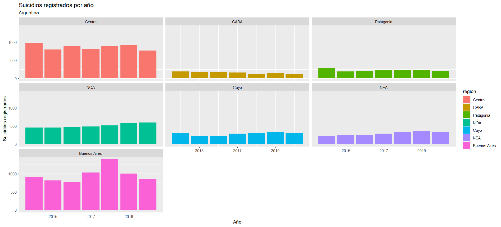
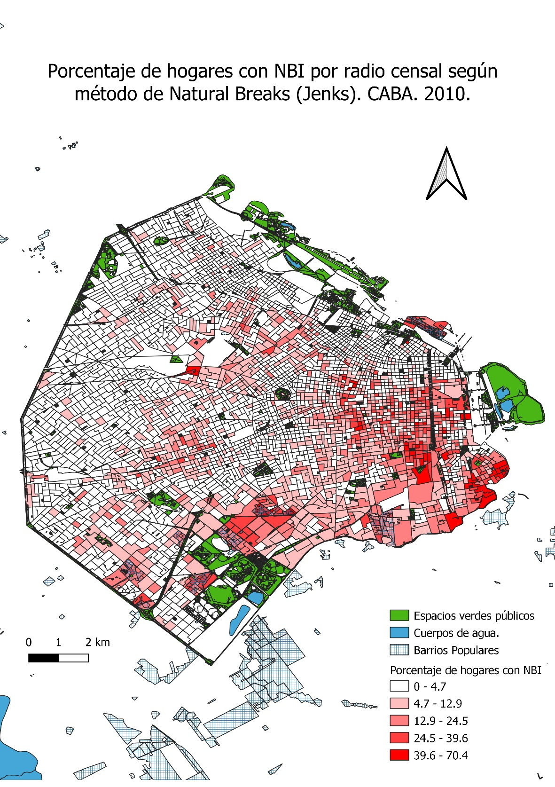
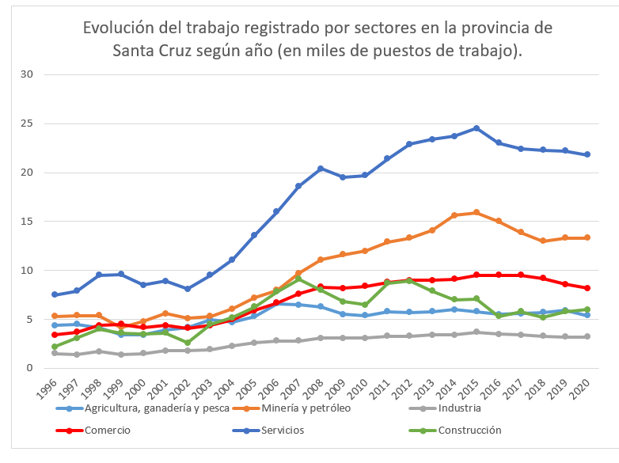

My researchs
I decided to use this site to show a resume of my last researchs, made using different programs.
Most of them were made with public datasets shared by different argentinian institutions.
Public bicicles use in Buenos Aires (2021)
In a course about the big data analysis with R we did a research about the use of the public bike system of Buenos Aires.
The difficulty was that the csv file that had the information had more than one million lines: one line for each personal use of the bikes.
The idea was discovering which was the time and day in which the bikes were more used. The results are the following.


As we can see in the plots the bikes were more used on fridays and in the afternoon, between 5 and 6 PM. But when we calcultate de average of time that the people used the bikes, we can see that they were used more time on saturdays and sundays (25 and 27 minutes on average) while the other days of the week do not arrive to an average of 20 minutes.

Probably this is related to the use that people does of the bikes: while on weekdays most of the people uses the bike to go to work, on weekends they tend to use it more time for recreative activities.
Crimes in Argentina
Looking for csv files to practice i found an open file about crimes in Argentina in the last years.
The file is reaally interesting because it has information about the 24 provinces of Argentina. That's why i decided to make a quantitative research about the evolution of the most common crimes in Argentina.
One thing thet shocked me was the growing of the sexual crimes. To allow me to compare the evolution of the last years i reagrupped the provinces into regions,
As we can see, the rapes and other sexual crimes grew up in all the regions.

The dataset also allowed us to see the number of other "situations" (here counted as "crimes") as suicides and car accidents.
As we can see in the plot, the tendency depends on the region. While some regions tend to increase their numbers, some others are stable and others tend to descend.


Some maps: poverty and minery
Also in the university i did a QGIS course. QGIS is a program that allows to create and process geographically referenced information.
For the final work i decided to make a map about the geographical distribution of poverty in Buenos Aires city relationing it with a layer about "popular neighborhoods".
The main object of the research was to discover which was the spacial distribution of poverty and if it was related to this type of neighborhoods.
As we can see poverty tends to concentrate in the south east of the city, generally close to this kind of neighborhoods.

The map that follows is about minery in Argentina.
Tha map allow us to see the distribution of the mines and which is their principal product.

Work market in Santa Cruz
One of my first projects as a Social Sciences researcher was about the work market in my province, Santa Cruz.
This plots are a just a part of this research about the economy of the province (that includes production, exports, demographic growing)
The plots were made with Excel and allows us to see the growing of the job positions in the last years and in which sectors were they.


If you want to see more of my researchs you can enter to my Tableau profile.